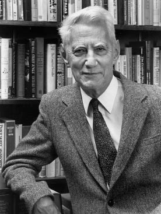

Введение

Клод Э́лвуд Ше́ннон (англ. Claude Elwood Shannon; 30 апреля 1916, Петоски, Мичиган, США — 24 февраля 2001, Медфорд, Массачусетс, США) — американский инженер, криптоаналитик и математик. Считается «отцом информационного века».
Является основателем теории информации, нашедшей применение в современных высокотехнологических системах связи. Предоставил фундаментальные понятия, идеи и их математические формулировки, которые в настоящее время формируют основу для современных коммуникационных технологий. В 1948 году предложил использовать слово «бит» для обозначения наименьшей единицы информации.
Кроме того, понятие энтропии было важной особенностью теории Шеннона. Он продемонстрировал, что введённая им энтропия эквивалентна мере неопределённости информации в передаваемом сообщении. Статьи Шеннона «Математическая теория связи» и «Теория связи в секретных системах» считаются основополагающими для теории информации и криптографии[6]. Клод Шеннон был одним из первых, кто подошёл к криптографии с научной точки зрения, он первым сформулировал её теоретические основы и ввёл в рассмотрение многие основные понятия. Шеннон внёс ключевой вклад в теорию вероятностных схем, теорию игр, теорию автоматов и теорию систем управления — области наук, входящие в понятие «кибернетика».
Я представляю себе время, когда мы будем для роботов тем же, чем собаки для людей, и я поддерживаю машины. (Клод Элвуд Шеннон)